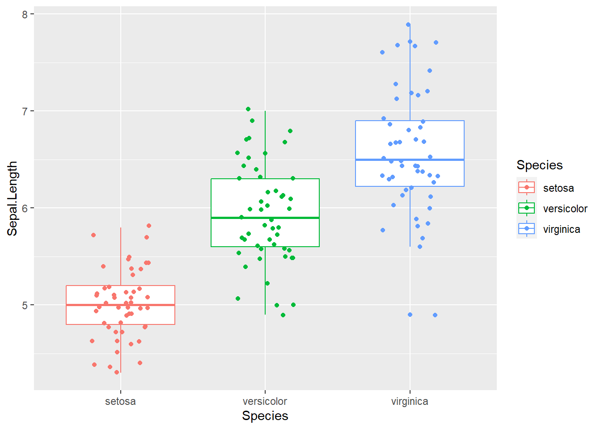

<!DOCTYPE html>
<html lang="es" xml:lang="es">
<head>

  <meta charset="utf-8" />
  <meta http-equiv="X-UA-Compatible" content="IE=edge" />
  <title>Capítulo 5 R Markdown | Ciencia de Datos</title>
  <meta name="description" content="BCRA" />
  <meta name="generator" content="bookdown 0.33 and GitBook 2.6.7" />

  <meta property="og:title" content="Capítulo 5 R Markdown | Ciencia de Datos" />
  <meta property="og:type" content="book" />
  
  <meta property="og:description" content="BCRA" />
  <meta name="github-repo" content="msangia/msangia.github" />

  <meta name="twitter:card" content="summary" />
  <meta name="twitter:title" content="Capítulo 5 R Markdown | Ciencia de Datos" />
  <meta name="twitter:site" content="@msangia" />
  <meta name="twitter:description" content="BCRA" />
  

<meta name="author" content="Máximo Sangiácomo" />


  <meta name="viewport" content="width=device-width, initial-scale=1" />
  <meta name="apple-mobile-web-app-capable" content="yes" />
  <meta name="apple-mobile-web-app-status-bar-style" content="black" />
  
  
<link rel="prev" href="gph2.html"/>
<link rel="next" href="conceptos.html"/>
<script src="libs/jquery-3.6.0/jquery-3.6.0.min.js"></script>
<script src="https://cdn.jsdelivr.net/npm/fuse.js@6.4.6/dist/fuse.min.js"></script>
<link href="libs/gitbook-2.6.7/css/style.css" rel="stylesheet" />
<link href="libs/gitbook-2.6.7/css/plugin-table.css" rel="stylesheet" />
<link href="libs/gitbook-2.6.7/css/plugin-bookdown.css" rel="stylesheet" />
<link href="libs/gitbook-2.6.7/css/plugin-highlight.css" rel="stylesheet" />
<link href="libs/gitbook-2.6.7/css/plugin-search.css" rel="stylesheet" />
<link href="libs/gitbook-2.6.7/css/plugin-fontsettings.css" rel="stylesheet" />
<link href="libs/gitbook-2.6.7/css/plugin-clipboard.css" rel="stylesheet" />


<link href="libs/anchor-sections-1.1.0/anchor-sections.css" rel="stylesheet" />
<link href="libs/anchor-sections-1.1.0/anchor-sections-hash.css" rel="stylesheet" />
<script src="libs/anchor-sections-1.1.0/anchor-sections.js"></script>
<html>
  <head>
	<link rel="shortcut icon" href="images/favicon.png" />
  </head>
  <body>
  </body>
</html>


<style type="text/css">
pre > code.sourceCode { white-space: pre; position: relative; }
pre > code.sourceCode > span { display: inline-block; line-height: 1.25; }
pre > code.sourceCode > span:empty { height: 1.2em; }
.sourceCode { overflow: visible; }
code.sourceCode > span { color: inherit; text-decoration: inherit; }
pre.sourceCode { margin: 0; }
@media screen {
div.sourceCode { overflow: auto; }
}
@media print {
pre > code.sourceCode { white-space: pre-wrap; }
pre > code.sourceCode > span { text-indent: -5em; padding-left: 5em; }
}
pre.numberSource code
  { counter-reset: source-line 0; }
pre.numberSource code > span
  { position: relative; left: -4em; counter-increment: source-line; }
pre.numberSource code > span > a:first-child::before
  { content: counter(source-line);
    position: relative; left: -1em; text-align: right; vertical-align: baseline;
    border: none; display: inline-block;
    -webkit-touch-callout: none; -webkit-user-select: none;
    -khtml-user-select: none; -moz-user-select: none;
    -ms-user-select: none; user-select: none;
    padding: 0 4px; width: 4em;
    color: #aaaaaa;
  }
pre.numberSource { margin-left: 3em; border-left: 1px solid #aaaaaa;  padding-left: 4px; }
div.sourceCode
  {   }
@media screen {
pre > code.sourceCode > span > a:first-child::before { text-decoration: underline; }
}
code span.al { color: #ff0000; font-weight: bold; } /* Alert */
code span.an { color: #60a0b0; font-weight: bold; font-style: italic; } /* Annotation */
code span.at { color: #7d9029; } /* Attribute */
code span.bn { color: #40a070; } /* BaseN */
code span.bu { } /* BuiltIn */
code span.cf { color: #007020; font-weight: bold; } /* ControlFlow */
code span.ch { color: #4070a0; } /* Char */
code span.cn { color: #880000; } /* Constant */
code span.co { color: #60a0b0; font-style: italic; } /* Comment */
code span.cv { color: #60a0b0; font-weight: bold; font-style: italic; } /* CommentVar */
code span.do { color: #ba2121; font-style: italic; } /* Documentation */
code span.dt { color: #902000; } /* DataType */
code span.dv { color: #40a070; } /* DecVal */
code span.er { color: #ff0000; font-weight: bold; } /* Error */
code span.ex { } /* Extension */
code span.fl { color: #40a070; } /* Float */
code span.fu { color: #06287e; } /* Function */
code span.im { } /* Import */
code span.in { color: #60a0b0; font-weight: bold; font-style: italic; } /* Information */
code span.kw { color: #007020; font-weight: bold; } /* Keyword */
code span.op { color: #666666; } /* Operator */
code span.ot { color: #007020; } /* Other */
code span.pp { color: #bc7a00; } /* Preprocessor */
code span.sc { color: #4070a0; } /* SpecialChar */
code span.ss { color: #bb6688; } /* SpecialString */
code span.st { color: #4070a0; } /* String */
code span.va { color: #19177c; } /* Variable */
code span.vs { color: #4070a0; } /* VerbatimString */
code span.wa { color: #60a0b0; font-weight: bold; font-style: italic; } /* Warning */
</style>

<style type="text/css">
/* Used with Pandoc 2.11+ new --citeproc when CSL is used */
div.csl-bib-body { }
div.csl-entry {
  clear: both;
}
.hanging div.csl-entry {
  margin-left:2em;
  text-indent:-2em;
}
div.csl-left-margin {
  min-width:2em;
  float:left;
}
div.csl-right-inline {
  margin-left:2em;
  padding-left:1em;
}
div.csl-indent {
  margin-left: 2em;
}
</style>

<link rel="stylesheet" href="css/style.css" type="text/css" />
<link rel="stylesheet" href="css/r4ds.css" type="text/css" />
</head>

<body>


  <div class="book without-animation with-summary font-size-2 font-family-1" data-basepath=".">

    <div class="book-summary">
      <nav role="navigation">

<ul class="summary">
<li><a href="./">Ciencia de Datos - BCRA</a></li>

<li class="divider"></li>
<li class="chapter" data-level="" data-path="index.html"><a href="index.html"><i class="fa fa-check"></i>Descripcion del curso</a></li>
<li class="chapter" data-level="1" data-path="intro.html"><a href="intro.html"><i class="fa fa-check"></i><b>1</b> Introduccion a R</a>
<ul>
<li class="chapter" data-level="1.1" data-path="intro.html"><a href="intro.html#primeros-pasos"><i class="fa fa-check"></i><b>1.1</b> Primeros pasos</a></li>
<li class="chapter" data-level="1.2" data-path="intro.html"><a href="intro.html#busacar-ayuda"><i class="fa fa-check"></i><b>1.2</b> Busacar ayuda</a></li>
<li class="chapter" data-level="1.3" data-path="intro.html"><a href="intro.html#tipos-de-datos"><i class="fa fa-check"></i><b>1.3</b> Tipos de datos</a></li>
<li class="chapter" data-level="1.4" data-path="intro.html"><a href="intro.html#limpieza-de-memoria"><i class="fa fa-check"></i><b>1.4</b> Limpieza de memoria</a></li>
<li class="chapter" data-level="1.5" data-path="intro.html"><a href="intro.html#asignación-de-valores"><i class="fa fa-check"></i><b>1.5</b> Asignación de valores</a></li>
<li class="chapter" data-level="1.6" data-path="intro.html"><a href="intro.html#operadores-aritméticos"><i class="fa fa-check"></i><b>1.6</b> Operadores aritméticos</a></li>
<li class="chapter" data-level="1.7" data-path="intro.html"><a href="intro.html#operadores-relacionales"><i class="fa fa-check"></i><b>1.7</b> Operadores relacionales</a></li>
<li class="chapter" data-level="1.8" data-path="intro.html"><a href="intro.html#operadores-lógicos"><i class="fa fa-check"></i><b>1.8</b> Operadores lógicos</a></li>
<li class="chapter" data-level="1.9" data-path="intro.html"><a href="intro.html#vectores"><i class="fa fa-check"></i><b>1.9</b> Vectores</a></li>
<li class="chapter" data-level="1.10" data-path="intro.html"><a href="intro.html#secuencias"><i class="fa fa-check"></i><b>1.10</b> Secuencias</a></li>
<li class="chapter" data-level="1.11" data-path="intro.html"><a href="intro.html#factores"><i class="fa fa-check"></i><b>1.11</b> Factores</a></li>
<li class="chapter" data-level="1.12" data-path="intro.html"><a href="intro.html#matrices"><i class="fa fa-check"></i><b>1.12</b> Matrices</a></li>
<li class="chapter" data-level="1.13" data-path="intro.html"><a href="intro.html#listas"><i class="fa fa-check"></i><b>1.13</b> Listas</a></li>
<li class="chapter" data-level="1.14" data-path="intro.html"><a href="intro.html#data-frames"><i class="fa fa-check"></i><b>1.14</b> Data frames</a></li>
<li class="chapter" data-level="1.15" data-path="intro.html"><a href="intro.html#r-base"><i class="fa fa-check"></i><b>1.15</b> R base</a></li>
<li class="chapter" data-level="1.16" data-path="intro.html"><a href="intro.html#apply-y-tapply"><i class="fa fa-check"></i><b>1.16</b> Apply y tapply</a></li>
<li class="chapter" data-level="1.17" data-path="intro.html"><a href="intro.html#map"><i class="fa fa-check"></i><b>1.17</b> Map</a></li>
<li class="chapter" data-level="1.18" data-path="intro.html"><a href="intro.html#loops"><i class="fa fa-check"></i><b>1.18</b> Loops</a></li>
<li class="chapter" data-level="1.19" data-path="intro.html"><a href="intro.html#condicionales"><i class="fa fa-check"></i><b>1.19</b> Condicionales</a></li>
<li class="chapter" data-level="1.20" data-path="intro.html"><a href="intro.html#funciones"><i class="fa fa-check"></i><b>1.20</b> Funciones</a>
<ul>
<li class="chapter" data-level="1.20.1" data-path="intro.html"><a href="intro.html#output-más-de-un-resultado"><i class="fa fa-check"></i><b>1.20.1</b> Output más de un resultado</a></li>
<li class="chapter" data-level="1.20.2" data-path="intro.html"><a href="intro.html#argumentos-con-valores-default"><i class="fa fa-check"></i><b>1.20.2</b> Argumentos con valores default</a></li>
</ul></li>
</ul></li>
<li class="chapter" data-level="2" data-path="bd.html"><a href="bd.html"><i class="fa fa-check"></i><b>2</b> Base de datos</a>
<ul>
<li class="chapter" data-level="2.1" data-path="bd.html"><a href="bd.html#directorio-de-trabajo"><i class="fa fa-check"></i><b>2.1</b> Directorio de trabajo</a></li>
<li class="chapter" data-level="2.2" data-path="bd.html"><a href="bd.html#cargar-datos"><i class="fa fa-check"></i><b>2.2</b> Cargar datos</a>
<ul>
<li class="chapter" data-level="2.2.1" data-path="bd.html"><a href="bd.html#ingrasar-datos-con-tidyverse"><i class="fa fa-check"></i><b>2.2.1</b> Ingrasar datos con <code>tidyverse</code></a></li>
<li class="chapter" data-level="2.2.2" data-path="bd.html"><a href="bd.html#bases-de-stata"><i class="fa fa-check"></i><b>2.2.2</b> Bases de Stata</a></li>
</ul></li>
<li class="chapter" data-level="2.3" data-path="bd.html"><a href="bd.html#problemas-de-imputación"><i class="fa fa-check"></i><b>2.3</b> Problemas de imputación</a></li>
<li class="chapter" data-level="2.4" data-path="bd.html"><a href="bd.html#exportar-datos"><i class="fa fa-check"></i><b>2.4</b> Exportar datos</a></li>
<li class="chapter" data-level="2.5" data-path="bd.html"><a href="bd.html#pipe"><i class="fa fa-check"></i><b>2.5</b> Pipe</a></li>
<li class="chapter" data-level="2.6" data-path="bd.html"><a href="bd.html#variables"><i class="fa fa-check"></i><b>2.6</b> Variables</a></li>
<li class="chapter" data-level="2.7" data-path="bd.html"><a href="bd.html#merge"><i class="fa fa-check"></i><b>2.7</b> Merge</a></li>
<li class="chapter" data-level="2.8" data-path="bd.html"><a href="bd.html#variables-group_by-mutate"><i class="fa fa-check"></i><b>2.8</b> Variables: group_by, mutate</a></li>
<li class="chapter" data-level="2.9" data-path="bd.html"><a href="bd.html#guardar-datos"><i class="fa fa-check"></i><b>2.9</b> Guardar datos</a></li>
<li class="chapter" data-level="2.10" data-path="bd.html"><a href="bd.html#valores-missing"><i class="fa fa-check"></i><b>2.10</b> Valores missing</a>
<ul>
<li class="chapter" data-level="2.10.1" data-path="bd.html"><a href="bd.html#eliminar-valores-missing"><i class="fa fa-check"></i><b>2.10.1</b> Eliminar valores missing</a></li>
</ul></li>
<li class="chapter" data-level="2.11" data-path="bd.html"><a href="bd.html#loop"><i class="fa fa-check"></i><b>2.11</b> Loop</a></li>
<li class="chapter" data-level="2.12" data-path="bd.html"><a href="bd.html#pivot-reshape"><i class="fa fa-check"></i><b>2.12</b> Pivot (Reshape)</a></li>
<li class="chapter" data-level="2.13" data-path="bd.html"><a href="bd.html#row-bind-append"><i class="fa fa-check"></i><b>2.13</b> Row bind (Append)</a></li>
<li class="chapter" data-level="2.14" data-path="bd.html"><a href="bd.html#strings"><i class="fa fa-check"></i><b>2.14</b> Strings</a></li>
<li class="chapter" data-level="2.15" data-path="bd.html"><a href="bd.html#fechas"><i class="fa fa-check"></i><b>2.15</b> Fechas</a>
<ul>
<li class="chapter" data-level="2.15.1" data-path="bd.html"><a href="bd.html#manipulación-de-fechas"><i class="fa fa-check"></i><b>2.15.1</b> Manipulación de fechas</a></li>
</ul></li>
<li class="chapter" data-level="2.16" data-path="bd.html"><a href="bd.html#análisis-de-datos"><i class="fa fa-check"></i><b>2.16</b> Análisis de datos</a>
<ul>
<li class="chapter" data-level="2.16.1" data-path="bd.html"><a href="bd.html#tablas"><i class="fa fa-check"></i><b>2.16.1</b> Tablas</a></li>
</ul></li>
<li class="chapter" data-level="2.17" data-path="bd.html"><a href="bd.html#group_by-summarise"><i class="fa fa-check"></i><b>2.17</b> group_by, summarise</a></li>
<li class="chapter" data-level="2.18" data-path="bd.html"><a href="bd.html#vector-de-resultados"><i class="fa fa-check"></i><b>2.18</b> Vector de resultados</a></li>
</ul></li>
<li class="chapter" data-level="3" data-path="gph1.html"><a href="gph1.html"><i class="fa fa-check"></i><b>3</b> Gráficos - Parte I</a>
<ul>
<li class="chapter" data-level="3.1" data-path="gph1.html"><a href="gph1.html#ggplot2"><i class="fa fa-check"></i><b>3.1</b> ggplot2</a></li>
<li class="chapter" data-level="3.2" data-path="gph1.html"><a href="gph1.html#estadísticas-con-ggplot2"><i class="fa fa-check"></i><b>3.2</b> Estadísticas con <code>ggplot2</code></a></li>
<li class="chapter" data-level="3.3" data-path="gph1.html"><a href="gph1.html#ggplot-position"><i class="fa fa-check"></i><b>3.3</b> GGPlot (position)</a></li>
<li class="chapter" data-level="3.4" data-path="gph1.html"><a href="gph1.html#time-series"><i class="fa fa-check"></i><b>3.4</b> Time series</a></li>
<li class="chapter" data-level="3.5" data-path="gph1.html"><a href="gph1.html#labels"><i class="fa fa-check"></i><b>3.5</b> Labels</a></li>
<li class="chapter" data-level="3.6" data-path="gph1.html"><a href="gph1.html#orden-de-factores-en-los-ejes-variables-string"><i class="fa fa-check"></i><b>3.6</b> Orden de factores en los ejes (variables string)</a></li>
<li class="chapter" data-level="3.7" data-path="gph1.html"><a href="gph1.html#guardar-un-gráfico"><i class="fa fa-check"></i><b>3.7</b> Guardar un gráfico</a></li>
</ul></li>
<li class="chapter" data-level="4" data-path="gph2.html"><a href="gph2.html"><i class="fa fa-check"></i><b>4</b> Gráficos - Parte II</a>
<ul>
<li class="chapter" data-level="4.1" data-path="gph2.html"><a href="gph2.html#títulos-en-los-ejes"><i class="fa fa-check"></i><b>4.1</b> Títulos en los ejes</a></li>
<li class="chapter" data-level="4.2" data-path="gph2.html"><a href="gph2.html#orden-de-los-graficos"><i class="fa fa-check"></i><b>4.2</b> Orden de los graficos</a></li>
<li class="chapter" data-level="4.3" data-path="gph2.html"><a href="gph2.html#agrandar-una-parte-del-grafico"><i class="fa fa-check"></i><b>4.3</b> Agrandar una parte del grafico</a></li>
<li class="chapter" data-level="4.4" data-path="gph2.html"><a href="gph2.html#escala-de-colores-manual"><i class="fa fa-check"></i><b>4.4</b> Escala de colores manual</a></li>
<li class="chapter" data-level="4.5" data-path="gph2.html"><a href="gph2.html#límites-epacios-y-etiquetas"><i class="fa fa-check"></i><b>4.5</b> Límites, epacios y etiquetas</a></li>
<li class="chapter" data-level="4.6" data-path="gph2.html"><a href="gph2.html#leyendas"><i class="fa fa-check"></i><b>4.6</b> Leyendas</a></li>
<li class="chapter" data-level="4.7" data-path="gph2.html"><a href="gph2.html#posición-de-la-leyenda"><i class="fa fa-check"></i><b>4.7</b> Posición de la leyenda</a></li>
<li class="chapter" data-level="4.8" data-path="gph2.html"><a href="gph2.html#estadísticas"><i class="fa fa-check"></i><b>4.8</b> Estadísticas</a></li>
<li class="chapter" data-level="4.9" data-path="gph2.html"><a href="gph2.html#unir-leyendas"><i class="fa fa-check"></i><b>4.9</b> Unir leyendas</a></li>
<li class="chapter" data-level="4.10" data-path="gph2.html"><a href="gph2.html#separar-leyendas"><i class="fa fa-check"></i><b>4.10</b> Separar leyendas</a></li>
<li class="chapter" data-level="4.11" data-path="gph2.html"><a href="gph2.html#agrupar-y-desagrupar"><i class="fa fa-check"></i><b>4.11</b> Agrupar y desagrupar</a></li>
<li class="chapter" data-level="4.12" data-path="gph2.html"><a href="gph2.html#themes"><i class="fa fa-check"></i><b>4.12</b> Themes</a></li>
</ul></li>
<li class="chapter" data-level="5" data-path="rmd.html"><a href="rmd.html"><i class="fa fa-check"></i><b>5</b> R Markdown</a>
<ul>
<li class="chapter" data-level="5.1" data-path="rmd.html"><a href="rmd.html#informes-con-r-markdown"><i class="fa fa-check"></i><b>5.1</b> Informes con R Markdown</a>
<ul>
<li class="chapter" data-level="5.1.1" data-path="rmd.html"><a href="rmd.html#intrormd"><i class="fa fa-check"></i><b>5.1.1</b> Introduccion</a></li>
<li class="chapter" data-level="5.1.2" data-path="rmd.html"><a href="rmd.html#referencias-cruzadas"><i class="fa fa-check"></i><b>5.1.2</b> Referencias cruzadas</a></li>
<li class="chapter" data-level="5.1.3" data-path="rmd.html"><a href="rmd.html#regresion"><i class="fa fa-check"></i><b>5.1.3</b> Regresion</a></li>
<li class="chapter" data-level="5.1.4" data-path="rmd.html"><a href="rmd.html#bullets"><i class="fa fa-check"></i><b>5.1.4</b> Bullets</a></li>
<li class="chapter" data-level="" data-path="rmd.html"><a href="rmd.html#bibliografia"><i class="fa fa-check"></i>Bibliografia</a></li>
</ul></li>
</ul></li>
<li class="chapter" data-level="6" data-path="conceptos.html"><a href="conceptos.html"><i class="fa fa-check"></i><b>6</b> Conceptos generales</a>
<ul>
<li class="chapter" data-level="6.1" data-path="conceptos.html"><a href="conceptos.html#estimacion"><i class="fa fa-check"></i><b>6.1</b> Estimacion</a></li>
<li class="chapter" data-level="6.2" data-path="conceptos.html"><a href="conceptos.html#prediccion"><i class="fa fa-check"></i><b>6.2</b> Prediccion</a></li>
<li class="chapter" data-level="6.3" data-path="conceptos.html"><a href="conceptos.html#inferencia"><i class="fa fa-check"></i><b>6.3</b> Inferencia</a></li>
<li class="chapter" data-level="6.4" data-path="conceptos.html"><a href="conceptos.html#metodos-parametricos"><i class="fa fa-check"></i><b>6.4</b> Metodos parametricos</a></li>
<li class="chapter" data-level="6.5" data-path="conceptos.html"><a href="conceptos.html#metodos-no-parametricos"><i class="fa fa-check"></i><b>6.5</b> Metodos no parametricos</a></li>
<li class="chapter" data-level="6.6" data-path="conceptos.html"><a href="conceptos.html#evaluacion-de-la-precision-del-modelo"><i class="fa fa-check"></i><b>6.6</b> Evaluacion de la precision del modelo</a>
<ul>
<li class="chapter" data-level="6.6.1" data-path="conceptos.html"><a href="conceptos.html#ajuste"><i class="fa fa-check"></i><b>6.6.1</b> Calidad del ajuste</a></li>
<li class="chapter" data-level="6.6.2" data-path="conceptos.html"><a href="conceptos.html#trade-off-sesgo-varianza"><i class="fa fa-check"></i><b>6.6.2</b> Trade-off Sesgo-Varianza</a></li>
<li class="chapter" data-level="6.6.3" data-path="conceptos.html"><a href="conceptos.html#clasificacion"><i class="fa fa-check"></i><b>6.6.3</b> Clasificacion</a></li>
<li class="chapter" data-level="6.6.4" data-path="conceptos.html"><a href="conceptos.html#confusion"><i class="fa fa-check"></i><b>6.6.4</b> Matriz de confusion</a></li>
<li class="chapter" data-level="6.6.5" data-path="conceptos.html"><a href="conceptos.html#roc"><i class="fa fa-check"></i><b>6.6.5</b> Curva ROC</a></li>
</ul></li>
<li class="chapter" data-level="6.7" data-path="conceptos.html"><a href="conceptos.html#resampling-methods"><i class="fa fa-check"></i><b>6.7</b> Resampling Methods</a>
<ul>
<li class="chapter" data-level="6.7.1" data-path="conceptos.html"><a href="conceptos.html#cv"><i class="fa fa-check"></i><b>6.7.1</b> Cross Validation</a></li>
<li class="chapter" data-level="6.7.2" data-path="conceptos.html"><a href="conceptos.html#bootstrap"><i class="fa fa-check"></i><b>6.7.2</b> Bootstrap</a></li>
</ul></li>
<li class="chapter" data-level="6.8" data-path="conceptos.html"><a href="conceptos.html#resumen"><i class="fa fa-check"></i><b>6.8</b> Resumen</a></li>
</ul></li>
<li class="chapter" data-level="7" data-path="mco.html"><a href="mco.html"><i class="fa fa-check"></i><b>7</b> Regresion lineal</a>
<ul>
<li class="chapter" data-level="7.1" data-path="mco.html"><a href="mco.html#relacion-entre-estimacion-optima-y-prediccion-optima"><i class="fa fa-check"></i><b>7.1</b> Relacion entre estimacion optima y prediccion optima</a></li>
<li class="chapter" data-level="7.2" data-path="mco.html"><a href="mco.html#aplicacion-practica"><i class="fa fa-check"></i><b>7.2</b> Aplicacion practica</a></li>
</ul></li>
<li class="chapter" data-level="8" data-path="shrinkage-methods.html"><a href="shrinkage-methods.html"><i class="fa fa-check"></i><b>8</b> Shrinkage Methods</a>
<ul>
<li class="chapter" data-level="8.1" data-path="shrinkage-methods.html"><a href="shrinkage-methods.html#lasso"><i class="fa fa-check"></i><b>8.1</b> LASSO</a></li>
<li class="chapter" data-level="8.2" data-path="shrinkage-methods.html"><a href="shrinkage-methods.html#ridge"><i class="fa fa-check"></i><b>8.2</b> <em>Ridge</em></a></li>
<li class="chapter" data-level="8.3" data-path="shrinkage-methods.html"><a href="shrinkage-methods.html#aplicacion-practica-1"><i class="fa fa-check"></i><b>8.3</b> Aplicacion practica</a></li>
</ul></li>
<li class="chapter" data-level="9" data-path="logit.html"><a href="logit.html"><i class="fa fa-check"></i><b>9</b> Logit</a>
<ul>
<li class="chapter" data-level="9.1" data-path="logit.html"><a href="logit.html#modelo-logit"><i class="fa fa-check"></i><b>9.1</b> Modelo <em>logit</em></a>
<ul>
<li class="chapter" data-level="9.1.1" data-path="logit.html"><a href="logit.html#interpretacion-de-coeficientes-en-el-modelo-logit"><i class="fa fa-check"></i><b>9.1.1</b> Interpretacion de coeficientes en el modelo <em>logit</em></a></li>
</ul></li>
<li class="chapter" data-level="9.2" data-path="logit.html"><a href="logit.html#aplicacion-practica-2"><i class="fa fa-check"></i><b>9.2</b> Aplicacion practica</a></li>
</ul></li>
<li class="chapter" data-level="10" data-path="arboles.html"><a href="arboles.html"><i class="fa fa-check"></i><b>10</b> Arboles de decision</a>
<ul>
<li class="chapter" data-level="10.1" data-path="arboles.html"><a href="arboles.html#classification-and-regression-tree-cart"><i class="fa fa-check"></i><b>10.1</b> <em>Classification and Regression Tree</em> (CART)</a></li>
<li class="chapter" data-level="10.2" data-path="arboles.html"><a href="arboles.html#bagging"><i class="fa fa-check"></i><b>10.2</b> Bagging</a></li>
<li class="chapter" data-level="10.3" data-path="arboles.html"><a href="arboles.html#random-forest"><i class="fa fa-check"></i><b>10.3</b> Random Forest</a></li>
<li class="chapter" data-level="10.4" data-path="arboles.html"><a href="arboles.html#boosting"><i class="fa fa-check"></i><b>10.4</b> Boosting</a>
<ul>
<li class="chapter" data-level="10.4.1" data-path="arboles.html"><a href="arboles.html#ada-boost"><i class="fa fa-check"></i><b>10.4.1</b> Ada Boost</a></li>
</ul></li>
<li class="chapter" data-level="10.5" data-path="arboles.html"><a href="arboles.html#aplicacion-practica-3"><i class="fa fa-check"></i><b>10.5</b> Aplicacion practica</a>
<ul>
<li class="chapter" data-level="10.5.1" data-path="arboles.html"><a href="arboles.html#arboles-de-clasificacion"><i class="fa fa-check"></i><b>10.5.1</b> Arboles de clasificacion</a></li>
<li class="chapter" data-level="10.5.2" data-path="arboles.html"><a href="arboles.html#compara"><i class="fa fa-check"></i><b>10.5.2</b> Comparacion de modelos para clasificacion</a></li>
<li class="chapter" data-level="10.5.3" data-path="arboles.html"><a href="arboles.html#grid-search"><i class="fa fa-check"></i><b>10.5.3</b> Grid search</a></li>
<li class="chapter" data-level="10.5.4" data-path="arboles.html"><a href="arboles.html#arboles-de-regresion"><i class="fa fa-check"></i><b>10.5.4</b> Arboles de regresion</a></li>
<li class="chapter" data-level="10.5.5" data-path="arboles.html"><a href="arboles.html#bagging-y-random-forests"><i class="fa fa-check"></i><b>10.5.5</b> Bagging y Random Forests</a></li>
<li class="chapter" data-level="10.5.6" data-path="arboles.html"><a href="arboles.html#boosting-1"><i class="fa fa-check"></i><b>10.5.6</b> Boosting</a></li>
</ul></li>
</ul></li>
<li class="chapter" data-level="11" data-path="nnet.html"><a href="nnet.html"><i class="fa fa-check"></i><b>11</b> Neural Networks</a>
<ul>
<li class="chapter" data-level="11.1" data-path="nnet.html"><a href="nnet.html#single-layer-neural-networks"><i class="fa fa-check"></i><b>11.1</b> Single Layer Neural Networks</a></li>
</ul></li>
<li class="chapter" data-level="12" data-path="cluster.html"><a href="cluster.html"><i class="fa fa-check"></i><b>12</b> Analisis de clusters</a>
<ul>
<li class="chapter" data-level="12.1" data-path="cluster.html"><a href="cluster.html#k-means-clustering"><i class="fa fa-check"></i><b>12.1</b> K-Means Clustering</a></li>
<li class="chapter" data-level="12.2" data-path="cluster.html"><a href="cluster.html#aplicacion-practica-4"><i class="fa fa-check"></i><b>12.2</b> Aplicacion practica</a></li>
</ul></li>
<li class="chapter" data-level="" data-path="bibliografia-1.html"><a href="bibliografia-1.html"><i class="fa fa-check"></i>Bibliografia</a></li>
<li class="divider"></li>
<li><a href="./" target="blank">Maximo Sangiacomo - GMyP</a></li>

</ul>

      </nav>
    </div>

    <div class="book-body">
      <div class="body-inner">
        <div class="book-header" role="navigation">
          <h1>
            <i class="fa fa-circle-o-notch fa-spin"></i><a href="./">Ciencia de Datos</a>
          </h1>
        </div>

        <div class="page-wrapper" tabindex="-1" role="main">
          <div class="page-inner">

            <section class="normal" id="section-">
<link href="css/style.css" rel="stylesheet">
<div class="hero-image-container"> 
  
</div>
<div id="rmd" class="section level1 hasAnchor" number="5">
<h1><span class="header-section-number">Capítulo 5</span> R Markdown<a href="rmd.html#rmd" class="anchor-section" aria-label="Anchor link to header"></a></h1>
<div id="informes-con-r-markdown" class="section level2 hasAnchor" number="5.1">
<h2><span class="header-section-number">5.1</span> Informes con R Markdown<a href="rmd.html#informes-con-r-markdown" class="anchor-section" aria-label="Anchor link to header"></a></h2>
<div id="intrormd" class="section level3 hasAnchor" number="5.1.1">
<h3><span class="header-section-number">5.1.1</span> Introduccion<a href="rmd.html#intrormd" class="anchor-section" aria-label="Anchor link to header"></a></h3>
<p><code>Markdown</code> es un lenguaje que combinado con <code>R</code> y <span class="math inline">\(\textit{LaTeX}\)</span> permite realizar documentos que integran distintas posibilidades en un simple <em>script</em>.</p>
<p>Si bien permite realizar documentos con diferentes formatos<a href="#fn7" class="footnote-ref" id="fnref7"><sup>7</sup></a> este tutorial se concentra en archivos con formato PDF.</p>
<p>Para poder utilizarlo, además de las librerías que hemos visto, se necesitan las siguientes:</p>
<ol style="list-style-type: decimal">
<li><p><code>markdown</code></p></li>
<li><p><code>rmarkdown</code></p></li>
<li><p><code>bookdown</code></p></li>
<li><p><code>tinytex</code></p></li>
<li><p><code>knitr</code></p></li>
</ol>
</div>
<div id="referencias-cruzadas" class="section level3 hasAnchor" number="5.1.2">
<h3><span class="header-section-number">5.1.2</span> Referencias cruzadas<a href="rmd.html#referencias-cruzadas" class="anchor-section" aria-label="Anchor link to header"></a></h3>
<p>La forma de realizar referencias cruzadas cambia dependiendo del elemento que se quiere referenciar (bibliografía, secciones, tablas, figuras, ecuaciones).</p>
<div id="ejemplos-de-varias-cosas" class="section level4 hasAnchor" number="5.1.2.1">
<h4><span class="header-section-number">5.1.2.1</span> Ejemplos (de varias cosas)<a href="rmd.html#ejemplos-de-varias-cosas" class="anchor-section" aria-label="Anchor link to header"></a></h4>
<p>La Sección <a href="rmd.html#intrormd">5.1.1</a> tiene un <em>label</em> mientras que la Sección <a href="rmd.html#referencias-cruzadas">5.1.2</a> no.</p>
<p>Una vez que terminé de <strong>estudiar todo el material</strong> de este maravilloso curso, el Cuadro <a href="rmd.html#tab:tab1rmd">5.1</a> es muy fácil de hacer. Se observa que en promedio el largo de sépalo es de 5.8 con un desvío estándar de 0.83.</p>
<table>
<caption>
<span id="tab:tab1rmd">Tabla 5.1: </span>Estadísticas descriptivas de la base IRIS
</caption>
<thead>
<tr>
<th style="text-align:left;">
Variable
</th>
<th style="text-align:center;">
Obs
</th>
<th style="text-align:center;">
Media
</th>
<th style="text-align:center;">
Mediana
</th>
<th style="text-align:center;">
SD
</th>
<th style="text-align:center;">
Min
</th>
<th style="text-align:center;">
Max
</th>
</tr>
</thead>
<tbody>
<tr>
<td style="text-align:left;">
Petal.Length
</td>
<td style="text-align:center;">
150
</td>
<td style="text-align:center;">
3.76
</td>
<td style="text-align:center;">
4.35
</td>
<td style="text-align:center;">
1.77
</td>
<td style="text-align:center;">
1.0
</td>
<td style="text-align:center;">
6.9
</td>
</tr>
<tr>
<td style="text-align:left;">
Petal.Width
</td>
<td style="text-align:center;">
150
</td>
<td style="text-align:center;">
1.20
</td>
<td style="text-align:center;">
1.30
</td>
<td style="text-align:center;">
0.76
</td>
<td style="text-align:center;">
0.1
</td>
<td style="text-align:center;">
2.5
</td>
</tr>
<tr>
<td style="text-align:left;">
Sepal.Length
</td>
<td style="text-align:center;">
150
</td>
<td style="text-align:center;">
5.84
</td>
<td style="text-align:center;">
5.80
</td>
<td style="text-align:center;">
0.83
</td>
<td style="text-align:center;">
4.3
</td>
<td style="text-align:center;">
7.9
</td>
</tr>
<tr>
<td style="text-align:left;">
Sepal.Width
</td>
<td style="text-align:center;">
150
</td>
<td style="text-align:center;">
3.06
</td>
<td style="text-align:center;">
3.00
</td>
<td style="text-align:center;">
0.44
</td>
<td style="text-align:center;">
2.0
</td>
<td style="text-align:center;">
4.4
</td>
</tr>
</tbody>
</table>
<p>La Figura <a href="rmd.html#fig:fig1rmd">5.1</a> muestra <em>box plots</em> de <code>Sepal.Length</code> por especie y esta creada <em>on the fly</em> (notar que los puntos de datos están algo distorsionados para que no queden en línea recta).</p>
<div class="figure" style="text-align: center"><span style="display:block;" id="fig:fig1rmd"></span>

<p class="caption">
Figura 5.1: Box plot con datos
</p>
</div>
<p>Por su parte, la Figura <a href="rmd.html#fig:fig2rmd">5.2</a> exhibe el logo de R (importando la imagen desde el disco) para hacerle un sencillo homenaje.</p>
<div class="figure" style="text-align: center"><span style="display:block;" id="fig:fig2rmd"></span>

<p class="caption">
Figura 5.2: Logo de R
</p>
</div>
<p>A la ecuación <a href="rmd.html#eq:mlrmd">(5.1)</a> ya la hemos visto antes, que representa?</p>
<p><span class="math display" id="eq:mlrmd">\[\begin{equation}
\tag{5.1}
  Y = \beta_{0} + \beta_{1} X_1 + \epsilon
\end{equation}\]</span></p>
<p><strong>Último mensaje</strong> del curso: Lo <strong>importante es NO</strong> perder la identidad (véase ecuación <a href="rmd.html#eq:matrmd">(5.2)</a>).</p>
<p><span class="math display" id="eq:matrmd">\[\begin{equation}
\tag{5.2}
  I =
    \begin{bmatrix}
      1 &amp; 0 &amp; 0 \\
      0 &amp; 1 &amp; 0 \\
      0 &amp; 0 &amp; 1
    \end{bmatrix}
\end{equation}\]</span></p>
</div>
</div>
<div id="regresion" class="section level3 hasAnchor" number="5.1.3">
<h3><span class="header-section-number">5.1.3</span> Regresion<a href="rmd.html#regresion" class="anchor-section" aria-label="Anchor link to header"></a></h3>
<p>Se estiman 2 especificaciones con la base de datos <code>Boston</code>. En el Cuadro 5.2 la columna <span class="math inline">\((1)\)</span> muestra la estimación de un modelo lineal simple mientras que en la columna <span class="math inline">\((2)\)</span> presenta un modelo lineal múltiple.</p>
<table style="text-align:center">
<caption>
<strong>Tabla 5.2: Estimación MCO.</strong>
</caption>
<tr>
<td colspan="3" style="border-bottom: 1px solid black">
</td>
</tr>
<tr>
<td style="text-align:left">
</td>
<td colspan="2">
Variable dependiente
</td>
</tr>
<tr>
<td>
</td>
<td colspan="2" style="border-bottom: 1px solid black">
</td>
</tr>
<tr>
<td style="text-align:left">
</td>
<td colspan="2">
Valor promedio de la vivienda
</td>
</tr>
<tr>
<td style="text-align:left">
</td>
<td>
(1)
</td>
<td>
(2)
</td>
</tr>
<tr>
<td colspan="3" style="border-bottom: 1px solid black">
</td>
</tr>
<tr>
<td style="text-align:left">
Número de habitaciones
</td>
<td>
9.102<sup>***</sup>
</td>
<td>
5.095<sup>***</sup>
</td>
</tr>
<tr>
<td style="text-align:left">
</td>
<td>
(0.419)
</td>
<td>
(0.444)
</td>
</tr>
<tr>
<td style="text-align:left">
</td>
<td>
</td>
<td>
</td>
</tr>
<tr>
<td style="text-align:left">
Porcentaje socioeconómico bajo
</td>
<td>
</td>
<td>
-0.642<sup>***</sup>
</td>
</tr>
<tr>
<td style="text-align:left">
</td>
<td>
</td>
<td>
(0.044)
</td>
</tr>
<tr>
<td style="text-align:left">
</td>
<td>
</td>
<td>
</td>
</tr>
<tr>
<td style="text-align:left">
Constante
</td>
<td>
-34.671<sup>***</sup>
</td>
<td>
-1.358
</td>
</tr>
<tr>
<td style="text-align:left">
</td>
<td>
(2.650)
</td>
<td>
(3.173)
</td>
</tr>
<tr>
<td style="text-align:left">
</td>
<td>
</td>
<td>
</td>
</tr>
<tr>
<td colspan="3" style="border-bottom: 1px solid black">
</td>
</tr>
<tr>
<td style="text-align:left">
Observations
</td>
<td>
506
</td>
<td>
506
</td>
</tr>
<tr>
<td style="text-align:left">
Adjusted R<sup>2</sup>
</td>
<td>
0.483
</td>
<td>
0.637
</td>
</tr>
<tr>
<td colspan="3" style="border-bottom: 1px solid black">
</td>
</tr>
<tr>
<td style="text-align:left">
Nota:
</td>
<td colspan="2" style="text-align:right">
<sup><em></sup>p&lt;0.1; <sup><strong></sup>p&lt;0.05; <sup></strong></em></sup>p&lt;0.01
</td>
</tr>
</table>
</div>
<div id="bullets" class="section level3 hasAnchor" number="5.1.4">
<h3><span class="header-section-number">5.1.4</span> Bullets<a href="rmd.html#bullets" class="anchor-section" aria-label="Anchor link to header"></a></h3>
<ul>
<li>Vamos a usar un segundo nivel con referencias.
<ul>
<li>Capítulo 27 de <span class="citation">Wickham y Grolemund (<a href="#ref-R4DS" role="doc-biblioref">2017</a>)</span>. Versión <a href="https://r4ds.had.co.nz/r-markdown.html">online</a></li>
<li>Libro de recetas <span class="citation">Xie, Dervieux, y Riederer (<a href="#ref-Xie2022" role="doc-biblioref">2022</a>)</span></li>
<li>R Markdown <span class="citation">Xie, Dervieux, y Riederer (<a href="#ref-Xie2021b" role="doc-biblioref">2021</a>)</span></li>
<li>La guía definitiva <span class="citation">Xie, Allaire, y Grolemund (<a href="#ref-Xie2021" role="doc-biblioref">2021</a>)</span></li>
<li>Más posibilidades <a href="https://rmarkdown.rstudio.com/">aquí</a> o <a href="https://bookdown.org/">aquí</a></li>
</ul></li>
</ul>
</div>
<div id="bibliografia" class="section level3 unnumbered hasAnchor">
<h3>Bibliografia<a href="rmd.html#bibliografia" class="anchor-section" aria-label="Anchor link to header"></a></h3>
<pre><code>---
title: &quot;Informes con R Markdown&quot;
author: &quot;Máximo Sangiácomo&quot;
date: &quot;2023-06-06&quot;
output:
  bookdown::pdf_document2:
fontsize: 12pt
linestretch: 1.2
lang: es    
link-citations: yes
bibliography: [&#39;biblio.bib&#39;]
---</code></pre>
<pre><code>```{r setup, include=FALSE}
knitr::opts_chunk$set(fig.width = 7, out.height = &#39;30%&#39;, fig.align = &quot;center&quot;, echo = FALSE, message=F, warning = F)
```</code></pre>
<pre><code>```{r lib, include=FALSE}
rm(list=ls())
gc()
library(tidyverse)
```</code></pre>
<pre><code># Introduccion {#intro}

`Markdown` es un lenguaje que combinado con `R` y $\textit{\textsc{LaTeX}}$ permite realizar documentos que integran distintas posibilidades en un simple _script_.

Si bien permite realizar documentos con diferentes formatos^[Por ejemplo, MS Word, HTML, PDF, beamer.] este tutorial se concentra en archivos con formato PDF.

Para poder utilizarlo, además de las librerías que hemos visto, se necesitan las siguientes:

1. `markdown`

2. `rmarkdown`

3. `bookdown`

4. `tinytex`

5. `knitr`
</code></pre>
<pre><code>
# Referencias cruzadas

La forma de realizar referencias cruzadas cambia dependiendo del elemento que se quiere referenciar (bibliografía, secciones, tablas, figuras, ecuaciones).

## Ejemplos (de varias cosas)

La Sección \@ref(intro) tiene un _label_ mientras que la Sección \@ref(referencias-cruzadas) no.

```{r stat}
tab = iris %&gt;% 
  dplyr::select_if(is.numeric) %&gt;% 
  pivot_longer(everything(), names_to = &#39;Variable&#39;, values_to = &#39;Value&#39;) %&gt;%
  group_by(Variable) %&gt;% 
  summarise(
    Obs = n(),
    Media = mean(Value, na.rm = T),
    Mediana = median(Value, na.rm = T),
    SD = sd(Value, na.rm = T),
    Min = min(Value, na.rm = T),
    Max = max(Value, na.rm = T)) %&gt;% 
  ungroup()
```

Una vez que terminé de **estudiar todo el material** de este maravilloso curso, el Cuadro \@ref(tab:tab1) es muy fácil de hacer. Se observa que en promedio el largo de sépalo es de 5.8 con un desvío estándar de 0.83.</code></pre>
<pre><code>```{r tab1}
knitr::kable(tab, align = &#39;lcccccc&#39;, digits = c(0,0,2,2,2,1,1), format = &#39;latex&#39;, position = &#39;!h&#39;, caption = &quot;Estadísticas descriptivas de la base IRIS&quot;)
```</code></pre>
<pre><code>La Figura \@ref(fig:fig1) muestra _box plots_ de `Sepal.Length` por especie y esta creada _on the fly_ (notar que los puntos de datos están algo distorsionados para que no queden en línea recta). 

```{r fig1, fig.cap=&#39;Box plot con datos&#39;}
ggplot(data = iris) +
  aes(x = Species, y = Sepal.Length, color = Species) +
  geom_boxplot() +
  geom_jitter(position = position_jitter(0.2)) +
  NULL
```

\newpage</code></pre>
<pre><code>Por su parte, la Figura \@ref(fig:fig2) exhibe el logo de R (importando la imagen desde el disco) para hacerle un sencillo homenaje. 

```{r fig2, fig.cap=&#39;Logo de R&#39;, out.width = &#39;30%&#39;}
knitr::include_graphics(&#39;smallorb.png&#39;)
```</code></pre>
<pre><code>A la ecuación \@ref(eq:ml) ya la hemos visto antes, que representa?

\begin{equation}
(\#eq:ml)
  Y = \beta_{0} + \beta_{1} X_1 + \epsilon
\end{equation}

**Último mensaje** del curso: Lo **importante es NO** perder la identidad (véase ecuación \@ref(eq:mat)).

\begin{equation}
(\#eq:mat)
  I = 
    \begin{bmatrix} 
      1 &amp; 0 &amp; 0 \\
      0 &amp; 1 &amp; 0 \\
      0 &amp; 0 &amp; 1
    \end{bmatrix}
\end{equation}</code></pre>
<pre><code># Regresion

Se estiman 2 especificaciones con la base de datos `Boston`. En el Cuadro \@ref(tab:reg1) la columna $(1)$ muestra la estimación de un modelo lineal simple mientras que en la columna $(2)$ presenta un modelo lineal múltiple.

```{r stargazer}
library(stargazer)
library(ISLR2)
lm.fit1 = lm(medv ~ rm, data = Boston)
lm.fit2 = lm(medv ~ rm + lstat, data = Boston)
```

```{r stargazer2, results = &quot;asis&quot;}
stargazer(lm.fit1, lm.fit2, type = &#39;latex&#39;, header=FALSE, label = &#39;tab:reg1&#39;, title = &#39;Estimación MCO.&#39;, table.placement = &quot;!h&quot;,
          keep.stat = c(&#39;n&#39;, &#39;adj.rsq&#39;),
          dep.var.caption = &#39;Variable dependiente&#39;,
          dep.var.labels   = &#39;Valor promedio de la vivienda&#39;,
          covariate.labels = c(&#39;Número de habitaciones&#39;, 
                               &#39;Porcentaje socioeconómico bajo&#39;, 
                               &#39;Constante&#39;),
          notes.label = &#39;Nota:&#39;) 
```</code></pre>
<pre><code># Bullets

* Vamos a usar un segundo nivel con referencias.
   + Capítulo 27 de @R4DS. Versión [online](https://r4ds.had.co.nz/r-markdown.html)
   + Libro de recetas @Xie2022
   + R Markdown @Xie2021b
   + La guía definitiva @Xie2021
   + Más posibilidades [aquí](https://rmarkdown.rstudio.com/) o [aquí](https://bookdown.org/)
</code></pre>
<pre><code># Bibliografia {-}</code></pre>

</div>
</div>
</div>
<h3>Bibliografia<a href="bibliografia-1.html#bibliografia-1" class="anchor-section" aria-label="Anchor link to header"></a></h3>
<div id="refs" class="references csl-bib-body hanging-indent">
<div id="ref-R4DS" class="csl-entry">
Wickham, Hadley, y Garrett Grolemund. 2017. <em>R for Data Science</em>. O’REILLY. <a href="https://r4ds.had.co.nz/">https://r4ds.had.co.nz/</a>.
</div>
<div id="ref-Xie2021" class="csl-entry">
Xie, Yihui, J. J. Allaire, y Garrett Grolemund. 2021. <em>R Markdown: The Definitive Guide</em>. <em>CRC Press</em>. Chapman; Hall Book. <a href="https://bookdown.org/yihui/rmarkdown/">https://bookdown.org/yihui/rmarkdown/</a>.
</div>
<div id="ref-Xie2021b" class="csl-entry">
Xie, Yihui, Christophe Dervieux, y Emily Riederer. 2021. <em>bookdown: Authoring Books and Technical Documents with R Markdown</em>. <em>CRC Press</em>. Chapman; Hall Book. <a href="https://bookdown.org/yihui/bookdown/">https://bookdown.org/yihui/bookdown/</a>.
</div>
<div id="ref-Xie2022" class="csl-entry">
———. 2022. <em>R Markdown Cookbook</em>. <em>CRC Press</em>. Chapman; Hall Book. <a href="https://bookdown.org/yihui/rmarkdown-cookbook/">https://bookdown.org/yihui/rmarkdown-cookbook/</a>.
</div>
</div>
<div class="footnotes">
<hr />
<ol start="7">
<li id="fn7"><p>Por ejemplo, MS Word, HTML, PDF, beamer.<a href="rmd.html#fnref7" class="footnote-back">↩︎</a></p></li>
</ol>
</div>
            </section>

          </div>
        </div>
      </div>
<a href="gph2.html" class="navigation navigation-prev " aria-label="Previous page"><i class="fa fa-angle-left"></i></a>
<a href="conceptos.html" class="navigation navigation-next " aria-label="Next page"><i class="fa fa-angle-right"></i></a>
    </div>
  </div>
<script src="libs/gitbook-2.6.7/js/app.min.js"></script>
<script src="libs/gitbook-2.6.7/js/clipboard.min.js"></script>
<script src="libs/gitbook-2.6.7/js/plugin-search.js"></script>
<script src="libs/gitbook-2.6.7/js/plugin-sharing.js"></script>
<script src="libs/gitbook-2.6.7/js/plugin-fontsettings.js"></script>
<script src="libs/gitbook-2.6.7/js/plugin-bookdown.js"></script>
<script src="libs/gitbook-2.6.7/js/jquery.highlight.js"></script>
<script src="libs/gitbook-2.6.7/js/plugin-clipboard.js"></script>
<script>
gitbook.require(["gitbook"], function(gitbook) {
gitbook.start({
"sharing": {
"github": false,
"facebook": true,
"twitter": true,
"linkedin": false,
"weibo": false,
"instapaper": false,
"vk": false,
"whatsapp": false,
"all": ["facebook", "twitter", "linkedin", "weibo", "instapaper"]
},
"fontsettings": {
"theme": "white",
"family": "sans",
"size": 2
},
"edit": {
"link": null,
"text": null
},
"history": {
"link": null,
"text": null
},
"view": {
"link": null,
"text": null
},
"download": null,
"search": {
"engine": "fuse",
"options": null
},
"toc": {
"collapse": "subsection"
}
});
});
</script>

<!-- dynamically load mathjax for compatibility with self-contained -->
<script>
  (function () {
    var script = document.createElement("script");
    script.type = "text/javascript";
    var src = "true";
    if (src === "" || src === "true") src = "https://cdnjs.cloudflare.com/ajax/libs/mathjax/2.7.9/latest.js?config=TeX-MML-AM_CHTML";
    if (location.protocol !== "file:")
      if (/^https?:/.test(src))
        src = src.replace(/^https?:/, '');
    script.src = src;
    document.getElementsByTagName("head")[0].appendChild(script);
  })();
</script>
</body>

</html>
